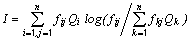
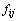
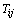
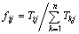
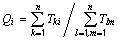
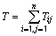
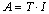
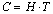
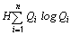
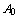

is a measure of the energy flow from j to i,
is a measure of the energy flow from j to i, Ascendency is a measure of the average mutual information in a system, scaled by system throughput, and is derived from information theory (see Ulanowicz and Norden, 1990). If one knows the location of a unit of energy the uncertainty about where it will next flow to is reduced by an amount known as the average mutual information’,

Eq. 37where, if is a measure of the energy flow from j to i,

is the fraction of the total flow from j that is represented by
, or,

Eq. 38is the probability that a unit of energy passes through i, or

Eq. 39is a probability and is scaled by multiplication with the total throughput of the system, T, where

Eq. 40Further

Eq. 41where, it is A that is called ‘ascendency’. The ascendency is symmetrical and will have the same value whether calculated from input or output.
There is an upper limit for the size of the ascendency. This upper limit is called the ‘development capacity’ and is estimated from

Eq. 42where H is called the ‘statistical entropy’, and is estimated from

Eq. 43The difference between the capacity and the ascendency is called ‘system overhead’. The overheads provide limits on how much the ascendency can increase and reflect the system's ‘strength in reserve’ from which it can draw to meet unexpected perturbations (Ulanowicz, 1986). As an example, the part of the ascendency that is due to imports,

, can increase at the expense of the overheads due to imports, . This can be done by either diminishing the imports or by importing from a few major sources only. The first solution would imply that the system should starve, while the latter would render the system more dependent on a few sources of imports. The system thus does not benefit from reducing below a certain system-specific critical level (Ulanowicz and Norden, 1990).The ascendency, overheads and capacity can all be split into contributions from imports, internal flow, exports and dissipation (respiration). These contributions are additive.
The unit for these measures is ‘flowbits’, or the product of flow (e.g., t·km-2 year-1) and bits. Here the ‘bit’ is an information unit, corresponding to the amount of uncertainty associated with a single binary decision.
The overheads on imports and internal flows (redundancy) may be seen as a measure of system stability sensu Odum, and the ascendency / system throughput ratio as a measure of information, as included in Odum’s attributes of ecosystem maturity. For a study of ecosystem maturity using Ecopath see Christensen (1995a).
Ecopath calculates ascendency, overheads and capacity for the whole system (Total form) and by group (By group form).